2 Graphical Presentation of Data with Base R
2.1 Introduction
Graphical displays of data can be very useful in showing the main features of a data set. The appropriate form of graph depends on the nature of the variables being displayed and what aspects are to be shown. However it should be kept in mind that the object is to provide a clear and truthful representation of the data, not to distort and not to impress with unnecessary “fancy” features.
2.1.1 Data frames
In R, we almost exclusively work with data frames for data visualisation. A data frame is a table where each column represents a variable and each row represents an observation.
Important: Data frames are not the same as matrices. While both are rectangular structures, they differ in key ways:
- A matrix contains elements of a single type (e.g., all numeric)
- A data frame can have different types in each column (e.g., numeric, character, factor)
- Data frames have column names that we use to access variables
While R has some special object types for specific data (such as ts for
time series), the unified framework introduced in Chapter 3
and onwards always applies to data frames. This means you do not need to
convert the class of your data for the sake of visualisation — if your data
are in a data frame, you are ready to plot.
If you are unfamiliar with data frames or need a refresher on basic operations like creating, subsetting, and manipulating data frames, please refer to Practical 1.
Base R provides a rich set of plotting functions that can be used without loading any additional packages. These functions are fast, flexible, and form the foundation upon which many other plotting systems are built.
2.1.2 Datasets used in this chapter
We primarily use the mpg dataset from the ggplot2 package, which
contains fuel economy data for 234 vehicles from 1999 to 2008:
library(ggplot2)
head(mpg)## # A tibble: 6 × 11
## manufacturer model displ year cyl trans drv cty
## <chr> <chr> <dbl> <int> <int> <chr> <chr> <int>
## 1 audi a4 1.8 1999 4 auto(l5) f 18
## 2 audi a4 1.8 1999 4 manual(m… f 21
## 3 audi a4 2 2008 4 manual(m… f 20
## 4 audi a4 2 2008 4 auto(av) f 21
## 5 audi a4 2.8 1999 6 auto(l5) f 16
## 6 audi a4 2.8 1999 6 manual(m… f 18
## # ℹ 3 more variables: hwy <int>, fl <chr>, class <chr>The variables are:
manufacturer: Car manufacturermodel: Model namedispl: Engine displacement in litresyear: Year of manufacture (1999 or 2008)cyl: Number of cylinderstrans: Type of transmissiondrv: Drive type (f = front-wheel, r = rear-wheel, 4 = 4-wheel)cty: City miles per gallonhwy: Highway miles per gallonfl: Fuel type (e = E85 ethanol, d = diesel, r = regular, p = premium, c = CNG)class: Type of vehicle (e.g., compact, SUV)
For time series data, we use the economics dataset:
head(economics)## # A tibble: 6 × 6
## date pce pop psavert uempmed unemploy
## <date> <dbl> <dbl> <dbl> <dbl> <dbl>
## 1 1967-07-01 507. 198712 12.6 4.5 2944
## 2 1967-08-01 510. 198911 12.6 4.7 2945
## 3 1967-09-01 516. 199113 11.9 4.6 2958
## 4 1967-10-01 512. 199311 12.9 4.9 3143
## 5 1967-11-01 517. 199498 12.8 4.7 3066
## 6 1967-12-01 525. 199657 11.8 4.8 3018This contains US economic time series data from 1967 to 2015. The variables are:
date: Month of data collectionpce: Personal consumption expenditures (billions of dollars)pop: Total population (thousands)psavert: Personal savings rate (percent)uempmed: Median duration of unemployment (weeks)unemploy: Number of unemployed (thousands)
2.2 One variable, continuous
When we have a single continuous variable, we want to understand its distribution: where are the values concentrated, how spread out are they, and is the distribution symmetric or skewed?
2.2.1 Histograms
Histograms represent the distribution of a sample of values of a continuous variable. The range of values is divided into intervals (bins or classes), and the frequencies in each class are represented by columns. As the variable is continuous, there are no gaps between neighbouring columns.
The \(y\)-axis can show either the count in each class (absolute frequency) or the density (relative frequency). Bin widths should be chosen to show the distribution without being swamped by random variation.
par(mfrow = c(1, 2))
hist(
mpg$displ,
col = "grey",
main = "Absolute Frequency",
freq = TRUE,
xlab = "Engine Displacement (L)",
ylab = "Counts"
)
hist(
mpg$displ,
col = "grey",
main = "Relative Frequency",
freq = FALSE,
xlab = "Engine Displacement (L)",
ylab = "Density"
)
par(mfrow = c(1, 1))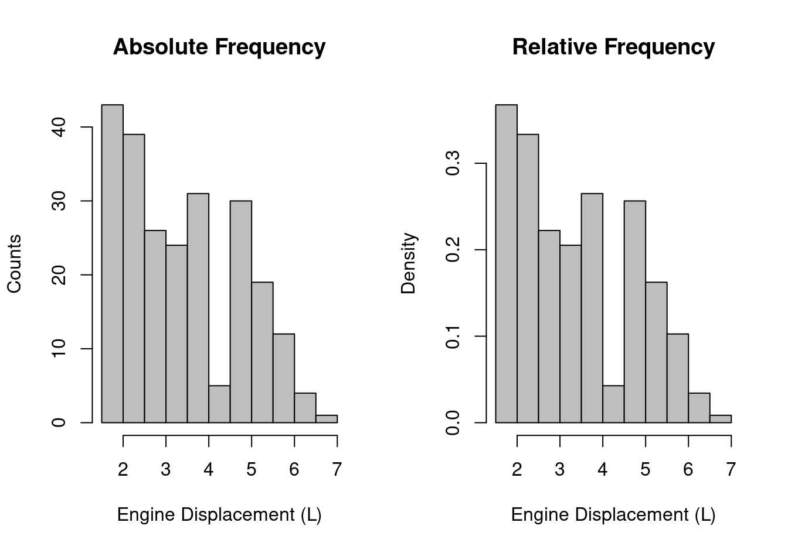
Figure 2.1: Histograms of engine displacement: absolute frequency (left) and relative frequency (right).
The ggplot2 equivalent uses geom_histogram() — see Section 3.4.1.
Exercise: Create a histogram of cty (city miles per gallon) from the mpg dataset. Use col = "lightblue" and add appropriate axis labels.
2.2.2 Density plots
Density plots provide a smoothed version of a histogram, estimating the
probability density function of the underlying variable. They are created
using the density() function combined with plot():
plot(
density(mpg$displ),
main = "Density Plot of Engine Displacement",
xlab = "Engine Displacement (L)",
col = "darkblue",
lwd = 2
)
rug(mpg$displ, col = "red")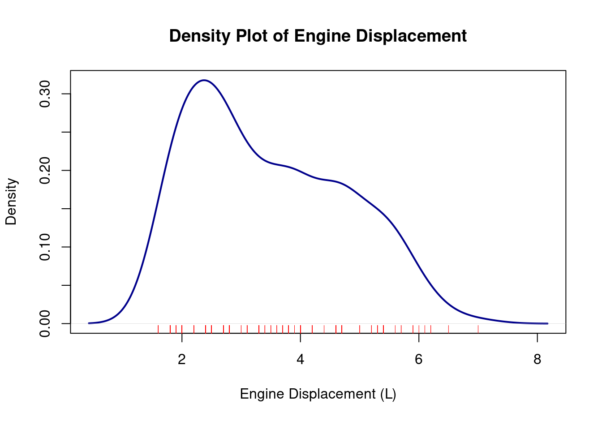
Figure 2.2: Density plot of engine displacement.
The rug() function adds tick marks showing individual data values along
the axis.
The ggplot2 equivalent uses geom_density() — see Section 3.4.2.
Exercise: Create a density plot of cty from the mpg dataset. Add a rug plot and use a different colour for the density line.
2.2.3 Stem-and-leaf plots
Stem-and-leaf plots are similar to histograms but show the actual data values:
stem(mpg$displ)##
## The decimal point is at the |
##
## 1 | 6666688888888888888999
## 2 | 0000000000000000000002222224444444444444
## 2 | 55555555555555555555777777778888888888
## 3 | 000000001111113333333334444
## 3 | 555556677788888888999
## 4 | 00000000000000022224
## 4 | 6666666666677777777777777777
## 5 | 002222233333344444444
## 5 | 67777777799
## 6 | 0122
## 6 | 5
## 7 | 0Values on the left (the “stems”) give the first digit(s), and those on the right (the “leaves”) the subsequent digit for each observation. This type of plot is useful for small datasets but becomes unwieldy for larger ones.
Note: There is no direct equivalent for stem-and-leaf plots in the unified framework in Chapter 3.
2.2.4 Boxplots
Boxplots (also known as box-and-whisker plots) provide a visual summary of the distribution. The central bar is the median, the box spans the interquartile range (IQR), and the whiskers extend to the most extreme points within 1.5 times the IQR. Points beyond the whiskers are shown as individual outliers.
boxplot(
mpg$displ,
main = "Engine Displacement",
ylab = "Engine Displacement (L)"
)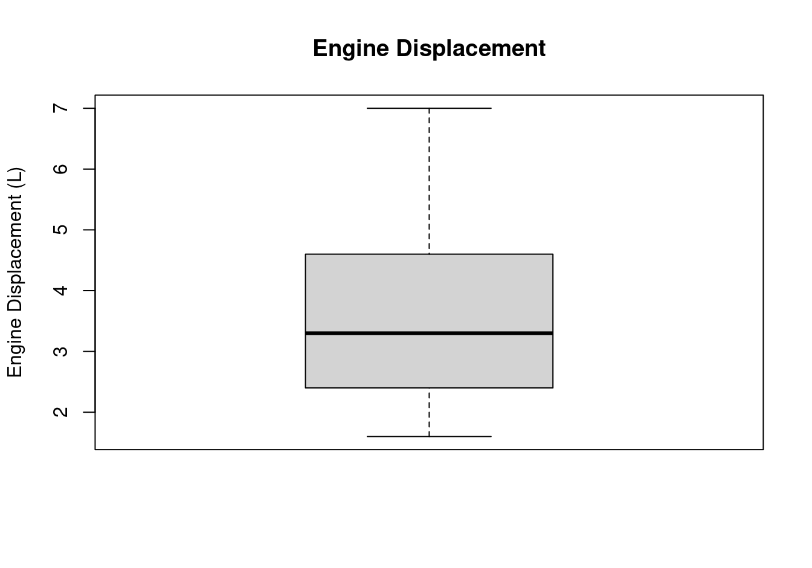
Figure 2.3: Boxplot of engine displacement.
While boxplots are most commonly used to compare distributions across groups (see Section 2.5.3), they are also useful for a single variable to quickly identify the median, spread, and any outliers.
The ggplot2 equivalent uses geom_boxplot() — see Section
3.4.3.
2.3 One variable, discrete
For discrete or categorical variables, we want to see the frequency of each category.
2.3.1 Bar charts
Bar charts display the frequency with which each distinct value of a variable occurred. The widths of the bars should be equal, and a small gap is drawn between each bar to indicate separate categories.
barplot(
table(mpg$drv),
xlab = "Drive Type",
ylab = "Frequency",
col = "steelblue",
names.arg = c("4-wheel", "Front", "Rear")
)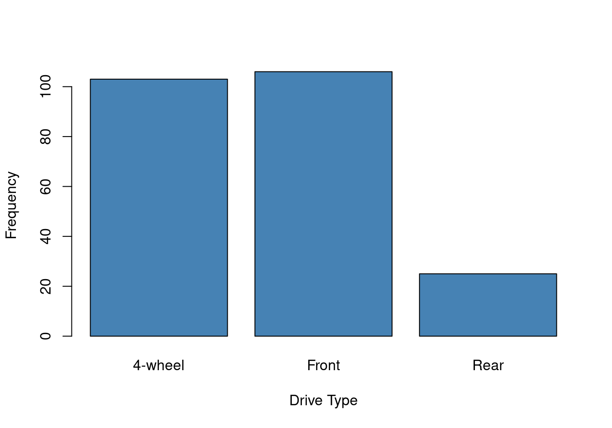
Figure 2.4: Bar chart of drive type in the mpg dataset.
We will see grouped bar charts in the section on two discrete variables below.
The ggplot2 equivalent uses geom_bar() — see Section 3.5.1.
Exercise: Create a bar chart of class (vehicle type) from the mpg dataset. Add appropriate axis labels.
2.4 Two variables, both continuous
When both variables are continuous, we want to understand their relationship: are they correlated, is the relationship linear, are there clusters or outliers?
2.4.1 Scatterplots
Scatterplots display the relationship between two continuous variables. Each observation is represented as a point in two-dimensional space.
plot(
mpg$displ,
mpg$hwy,
xlab = "Engine Displacement (L)",
ylab = "Highway MPG",
main = "Fuel Efficiency vs Engine Size",
pch = 19
)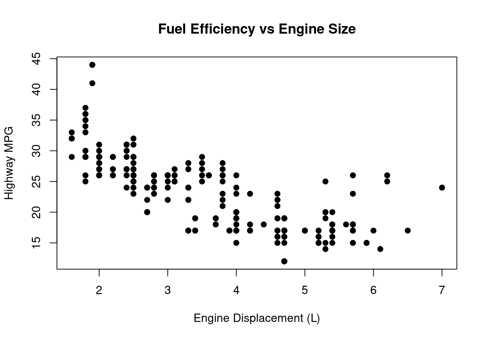
Figure 2.5: Scatterplot of engine displacement vs highway MPG.
We can add a regression line to show the trend:
plot(
mpg$displ,
mpg$hwy,
xlab = "Engine Displacement (L)",
ylab = "Highway MPG",
main = "Fuel Efficiency vs Engine Size",
pch = 19
)
abline(lm(hwy ~ displ, data = mpg), col = "red", lwd = 2)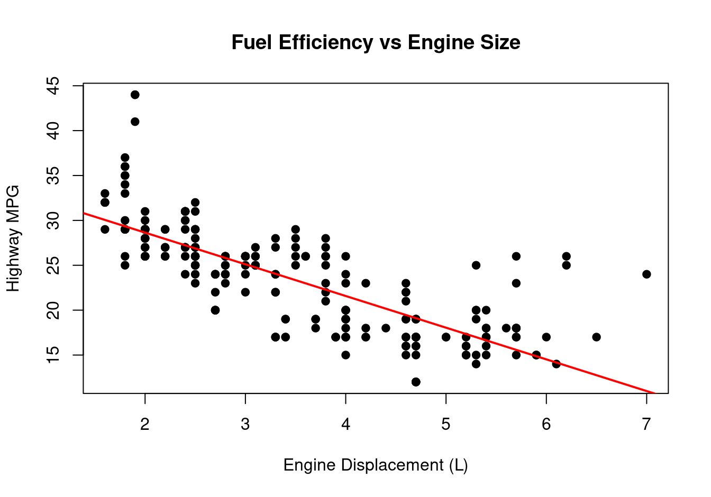
Figure 2.6: Scatterplot with regression line.
The ggplot2 equivalent uses geom_point() — see Section 3.6.1.
Exercise: Create a scatterplot of cty (\(y\)-axis) versus hwy (\(x\)-axis) from the mpg dataset. Add a regression line. What relationship do you observe?
2.4.2 Line plots
Line plots connect observations in sequence and are used for time series or
ordered data. For time series data like economics, a line plot shows the
trend over time:
plot(
economics$date,
economics$unemploy,
type = "l",
xlab = "Date",
ylab = "Unemployment (thousands)",
main = "US Unemployment Over Time",
col = "darkblue"
)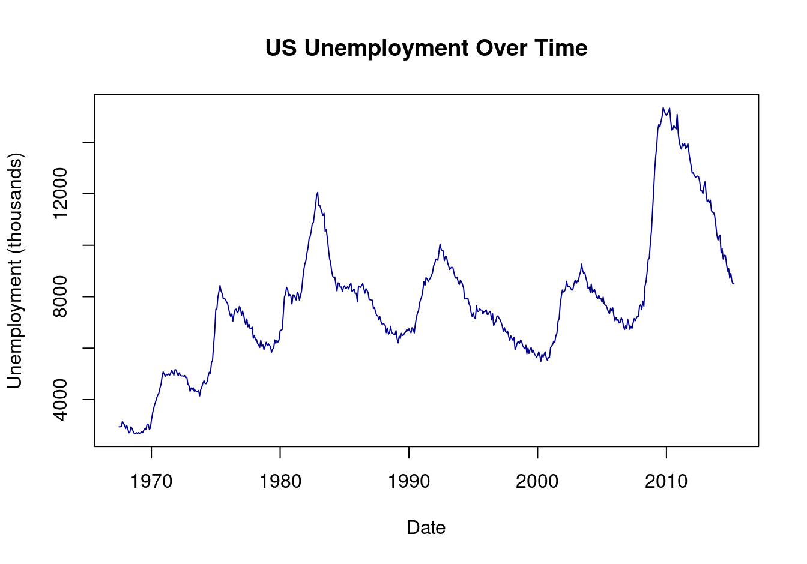
Figure 2.7: Unemployment over time in the US.
Note that a scatterplot (type = "p" or default) would not be appropriate
here — the sequential nature of time series data is best shown with
connected lines:
plot(
economics$date,
economics$unemploy,
xlab = "Date",
ylab = "Unemployment (thousands)",
main = "Same Data as Scatterplot",
pch = 19,
cex = 0.5
)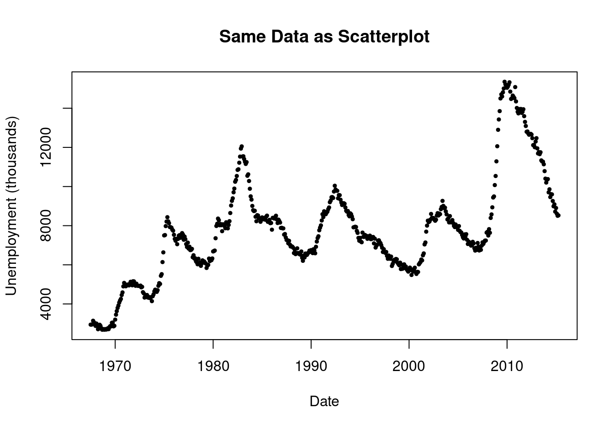
Figure 2.8: Scatterplot of time series data — not as informative as a line plot.
The ggplot2 equivalent uses geom_line() — see Section 3.6.2.
Exercise: Create a line plot of psavert (personal savings rate) over time from the economics dataset. Add appropriate axis labels.
2.4.3 Pairs plots (scatterplot matrix)
Coming back to scatterplot, what if we want to look at pairs of variables simultaneously? When exploring relationships among multiple continuous variables, a pairs plot (scatterplot matrix) shows all pairwise scatterplots at once:
pairs(
mpg[, c("displ", "cty", "hwy")],
main = "Scatterplot Matrix",
pch = 19
)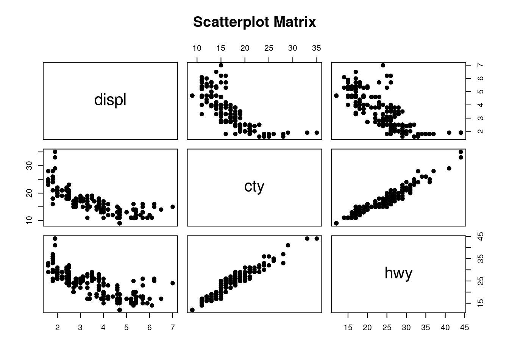
Figure 2.9: Pairs plot of selected mpg variables.
Alternatively, if you have only numeric columns, you can use plot()
directly on a data frame, which calls pairs() automatically.
The ggplot2 equivalent uses ggpairs() from the GGally package — see
Section 3.6.3.
2.5 Two variables, one continuous and one discrete
When we have one continuous variable and one categorical variable, we typically want to compare distributions across groups.
2.5.1 The problem with scatterplots
A naive approach might be to use a scatterplot, but this doesn’t work well because the discrete variable creates vertical strips of points:
plot(
as.numeric(factor(mpg$drv)),
mpg$displ,
xlab = "Drive Type",
ylab = "Engine Displacement (L)",
main = "Engine Displacement by Drive Type",
pch = 19,
xaxt = "n"
)
axis(1, at = 1:3, labels = c("4-wheel", "Front", "Rear"))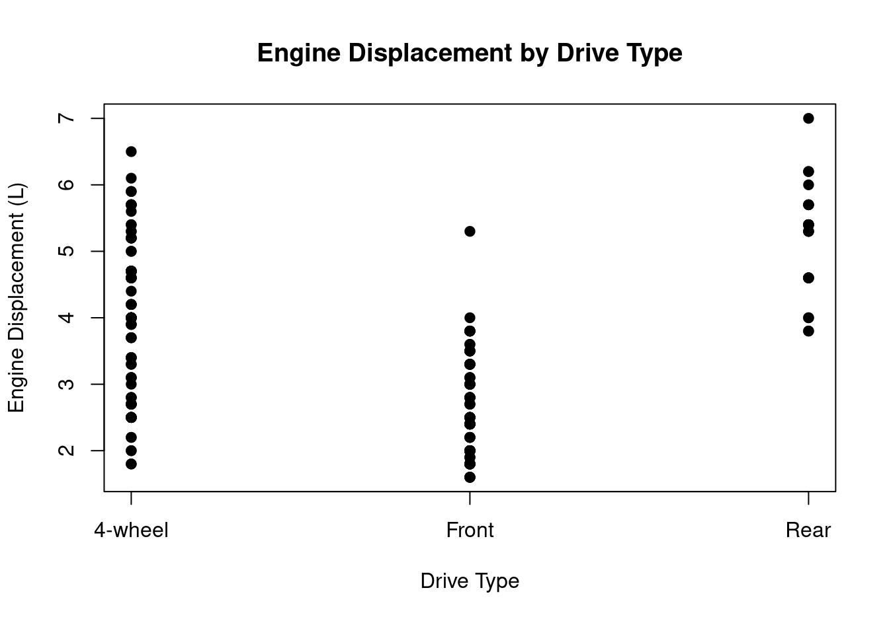
Figure 2.10: Scatterplot for continuous vs discrete — not ideal due to overplotting.
Many points overlap, making it hard to see the distribution within each group.
2.5.2 Stripcharts
A stripchart (also called a one-dimensional scatterplot) addresses the overplotting problem by adding jitter — small random horizontal offsets:
stripchart(
displ ~ drv,
data = mpg,
method = "jitter",
pch = 19,
vertical = TRUE,
xlab = "Drive Type",
ylab = "Engine Displacement (L)",
group.names = c("4-wheel", "Front", "Rear")
)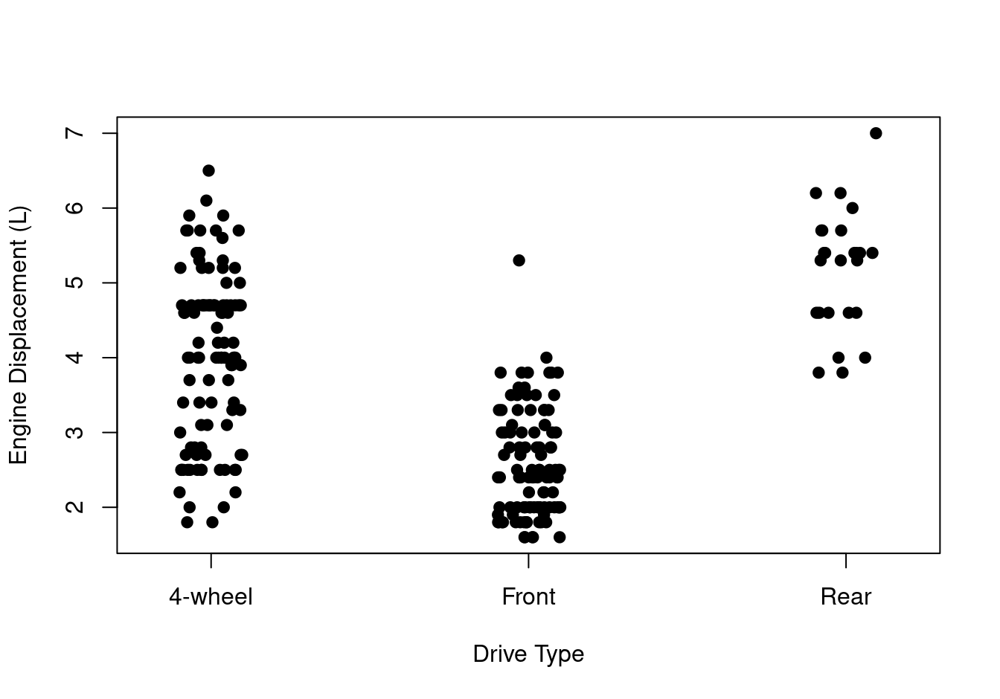
Figure 2.11: Stripchart of engine displacement by drive type.
This shows all individual data points, which is useful for smaller datasets.
The ggplot2 equivalent uses geom_jitter() — see Section 3.7.2.
Exercise: Create a stripchart of cty by class from the mpg dataset. Use jittering and add appropriate axis labels.
2.5.3 Boxplots
For larger datasets or when summary statistics are more important than individual points, boxplots are the standard choice. The central bar is the median, the box spans the interquartile range (IQR), and the whiskers extend to the most extreme points within 1.5 times the IQR. Points beyond the whiskers are shown as individual outliers.
boxplot(
displ ~ drv,
data = mpg,
xlab = "Drive Type",
ylab = "Engine Displacement (L)",
names = c("4-wheel", "Front", "Rear")
)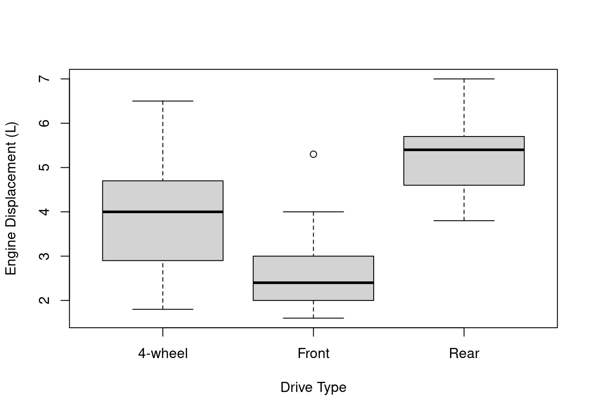
Figure 2.12: Boxplot of engine displacement by drive type.
The ggplot2 equivalent uses geom_boxplot() — see Section 3.7.3.
Exercise: Create a boxplot of cty by class from the mpg dataset. Which vehicle class has the best city fuel efficiency? Which has the most variability?
2.6 Two variables, both discrete
When both variables are categorical, we are looking at the joint frequency distribution—how often each combination of categories occurs.
2.6.1 Grouped bar charts
Grouped bar charts show frequencies for combinations of two categorical variables. Here we show vehicle class by drive type:
# Create contingency table
class_drv <- table(mpg$class, mpg$drv)
barplot(
class_drv,
beside = TRUE,
xlab = "Drive Type",
ylab = "Frequency",
col = rainbow(7),
legend.text = rownames(class_drv),
args.legend = list(x = "topright", cex = 0.7),
names.arg = c("4-wheel", "Front", "Rear")
)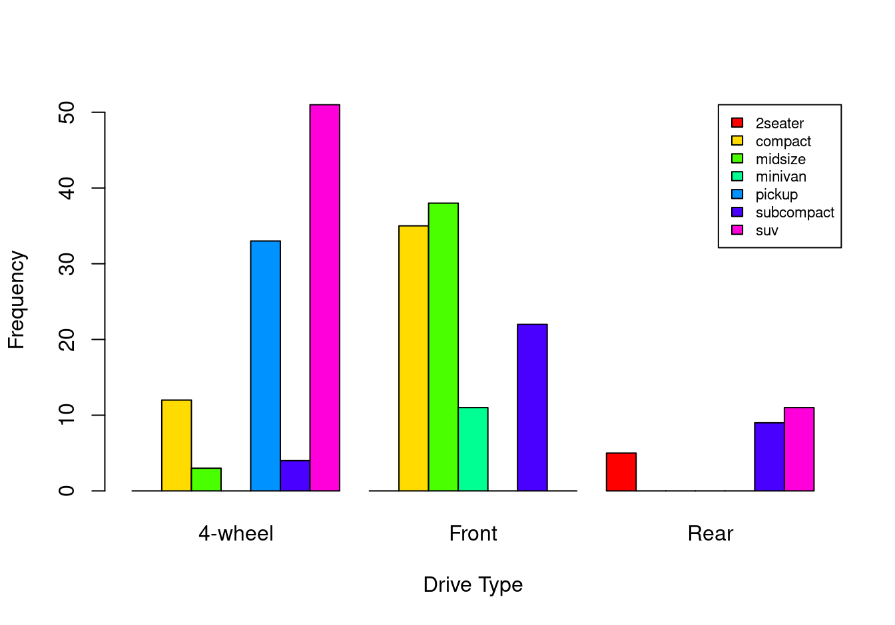
Figure 2.13: Grouped bar chart showing drive type by vehicle class.
The ggplot2 equivalent uses geom_bar() with the fill aesthetic — see
Section 3.8.1. Colour customisation is covered in Chapter
4.
2.6.2 Mosaic plots
Mosaic plots show the relative frequencies of combinations. The area of each rectangle is proportional to the frequency of that combination:
mosaicplot(
table(mpg$drv, mpg$cyl),
main = "Drive Type by Cylinders",
xlab = "Drive Type",
ylab = "Cylinders",
color = TRUE
)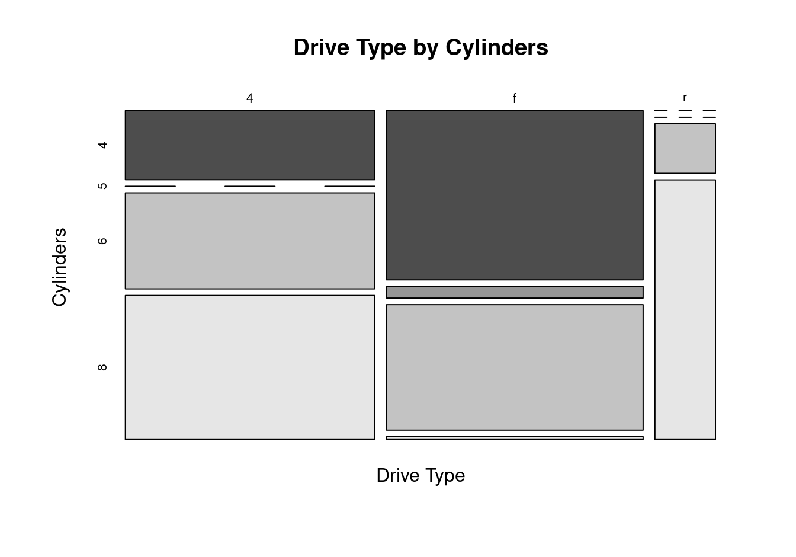
Figure 2.14: Mosaic plot of drive type by number of cylinders.
2.6.3 When a table suffices
For two discrete variables, a simple contingency table often communicates the information more clearly than a plot:
table(mpg$drv, mpg$cyl)##
## 4 5 6 8
## 4 23 0 32 48
## f 58 4 43 1
## r 0 0 4 21Don’t create visualisations for the sake of visualisations — think about whether a plot actually adds value over a numerical summary.
2.7 Summary
2.7.1 Choosing the right plot
The appropriate plot type depends on the nature of your variables:
| Variables | Types | Base R function(s) |
|---|---|---|
| One continuous | Distribution | hist(), plot(density()) |
| One continuous | Summary | boxplot() |
| One continuous | Values | stem() |
| One discrete | Frequency | barplot(table()) |
| Two continuous | Relationship | plot() |
| Two continuous | Time series | plot(type = "l") |
| Multiple pairs of continuous | Pairwise | pairs() |
| One cont. + one discrete | Comparison | stripchart(), boxplot() |
| Two discrete | Joint frequency | barplot(table()), mosaicplot() |
| Two continuous | \(+\) straight line | plot() + abline(lm()) |
2.7.2 What to look for
Using these plots, we can understand:
- Distribution shape: Is it symmetric or skewed? Unimodal or multimodal?
- Centre and spread: Where are the values concentrated? How variable?
- Outliers: Are there unusual observations?
- Relationships: Are two variables correlated? Linear or nonlinear?
- Group differences: How do distributions differ across categories?
2.7.3 Limitations of base R graphics
While base R graphics are powerful and flexible, they have several limitations:
Inconsistent syntax: Different plot types use different functions with different argument names and behaviours.
Clunky customisation: Adding colours, legends, labels, and titles often requires multiple lines of code and careful coordination.
No colour-blind-friendly defaults: Creating accessible visualisations requires manual colour selection.
Redundant colour use: It’s common to add colour for aesthetic reasons even when it encodes no information.
No unified framework: Each plot type is a standalone function, making it difficult to build a mental model of how graphics work.
These limitations are addressed by ggplot2, which provides a unified
framework based on the grammar of graphics. In the following chapters,
we will see how ggplot2 offers consistent syntax, automatic legends,
thoughtful defaults, and a layered approach to building graphics.